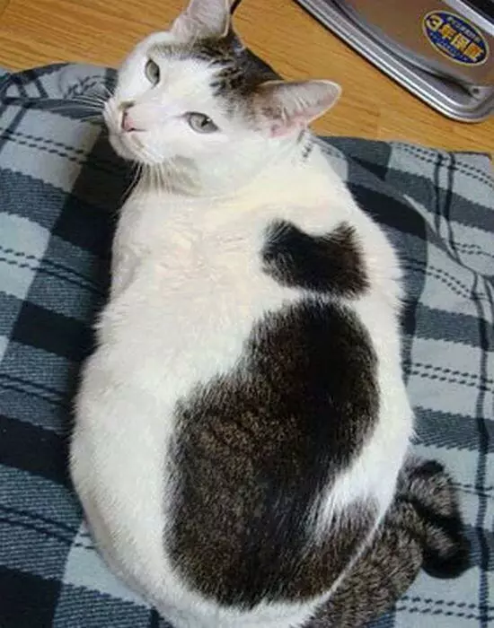
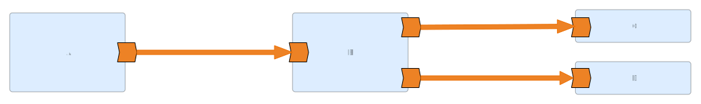
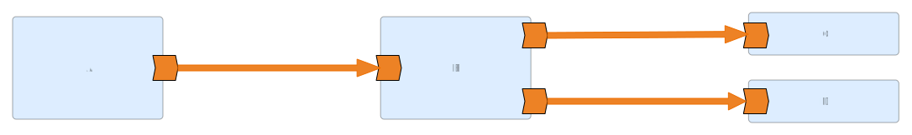

#geocampes se nos va de las manos @delawen pic.twitter.com/qzd1etVsqm
— Micho Garcia (@michogar) October 22, 2016

@delawen hablando sobre zombis #geocampes pic.twitter.com/U285FR5hUW
— wladimir szczerban (@bolosig) October 22, 2016
About me
- 19🐱🐱 Crazy Cat Lady
- Free and Open Source Advocate
- 2008 Computer Science Graduate (Software Engineer)
- 2009 Dijkstra A* Witch
- 2012 Metadata Wrangler
- 2013 OSGeo Charter Member
- 2017-2019 OSGeo President
- 2016 Women in Tech
- Senior Software Engineer at
- 2019 Integration Druid
- 2020 Apache Software Foundation


 

Camel Quarkus
KNative JVM
Camel K
Camel in containers
Kamelets
KNative combined with Kafka
Simpler pieces: Source and Sink
Demo time
// camel-k: language=js
// Write your routes here, for example:
from('timer:js?period=1000')
.setBody()
.simple('Hello Cat!')
.to('log:info')
Demo time
// camel-k: language=java
import org.apache.camel.builder.RouteBuilder;
public class Basic extends RouteBuilder {
@Override
public void configure() throws Exception {
from("timer:java?period=1000")
.setHeader("animal")
.constant("Cat")
.setBody()
.simple("Hello ${header.animal}!")
.to("log:info");
}
}
Questions?
You can find more on
This presentation is on